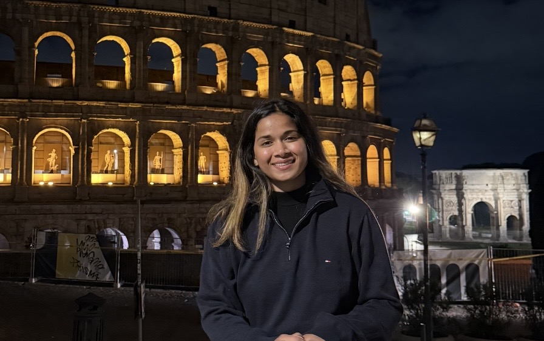
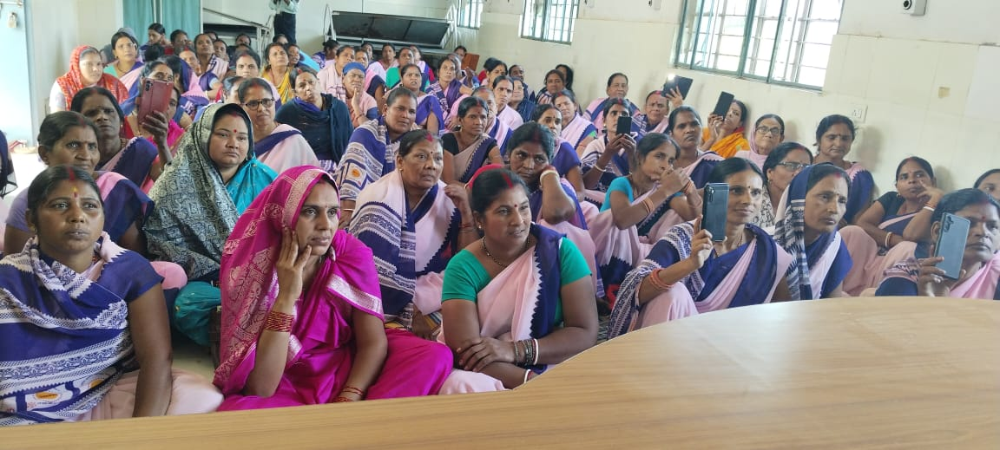
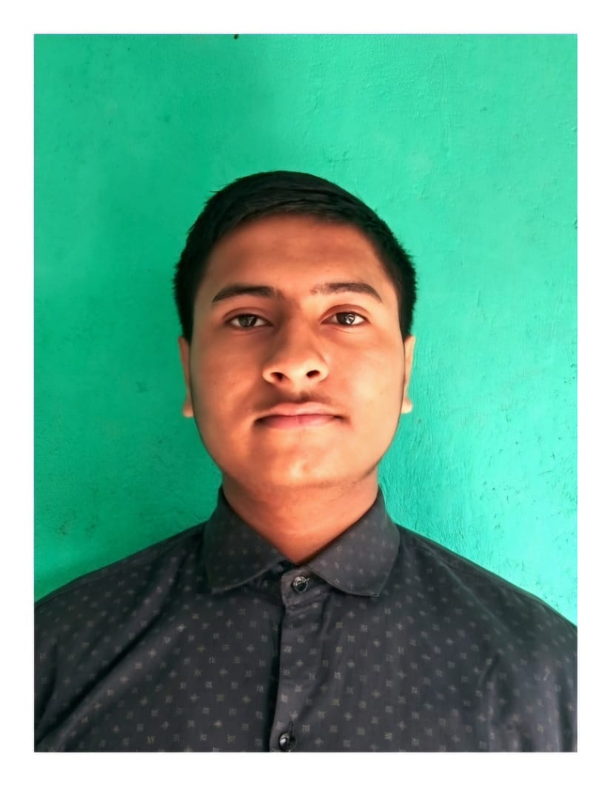
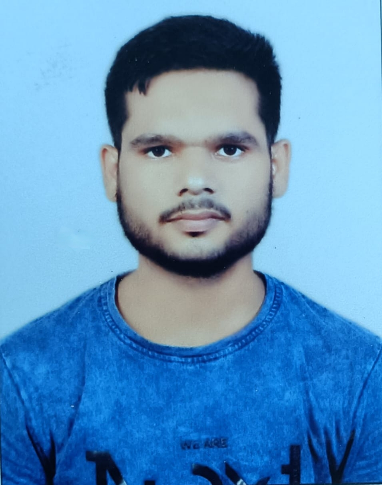

Tejaswini
Founder
§ 01 How it started

Sajni asked us to open one, so we opened one.
Sajni worked in several homes every day. She cleaned, she cooked, she kept going. But during her period, she could not use the toilets in the houses where she worked. So she walked home and back, sometimes more than once a day, just to change her pad. The pads caused rashes. The heat made it worse. She kept going anyway, because that is what you do when you have no other choice.
When she tried a menstrual cup for the first time, something changed. She could work through the day. She did not have to stop. She did not have to explain herself to anyone. For the first time, her period was something she managed, not something that managed her.
She came back and asked for a cup for her daughter. Then she came back again, this time for a neighbour. Our founder said, half joking: we do not even run a charity. Sajni said: then you should open one. So we did.
Our founder went back and told the women in the community. Their response was simple and direct: if opening a charity means we can get help, then we need this charity.
§ 02 What we do
We run four programmes across Khagaria and Bhagalpur. Each came from listening to what the community actually needed, not from deciding what was good for them.
§ 03 Our team
The people who do the work: our core team and the volunteers who show up on the ground across Khagaria and Bhagalpur.



§ 04 Be part of it
It started with one conversation. Yours can be the next. Support the work, or come and be part of it.